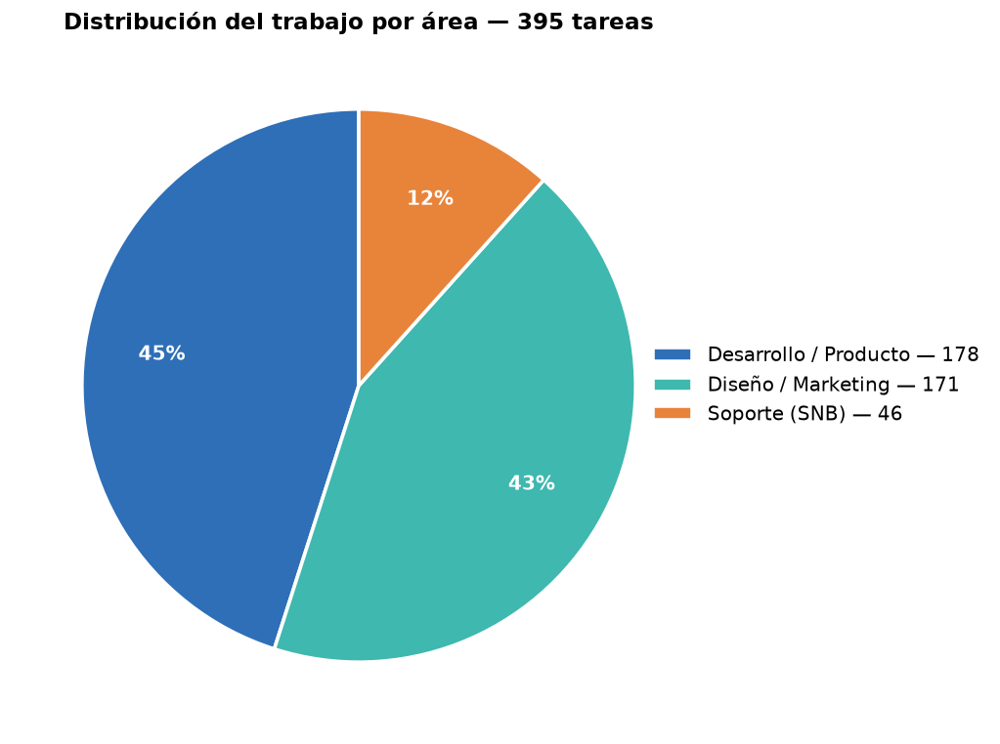
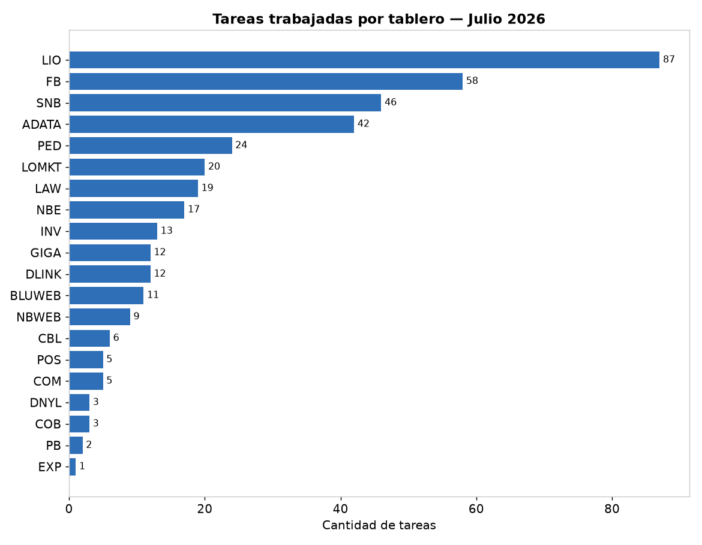
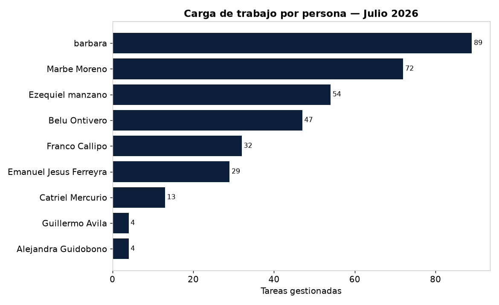
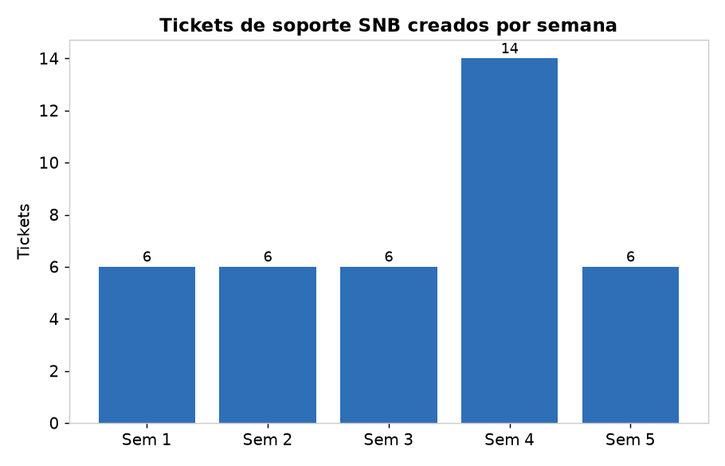
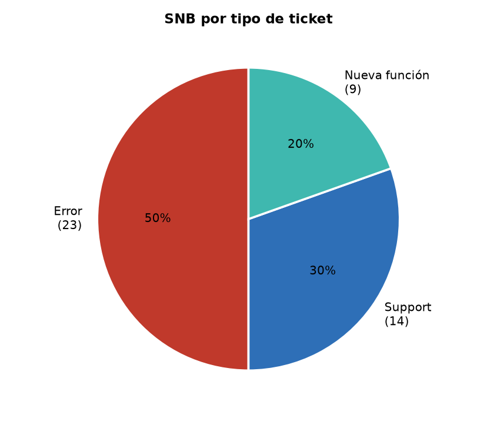
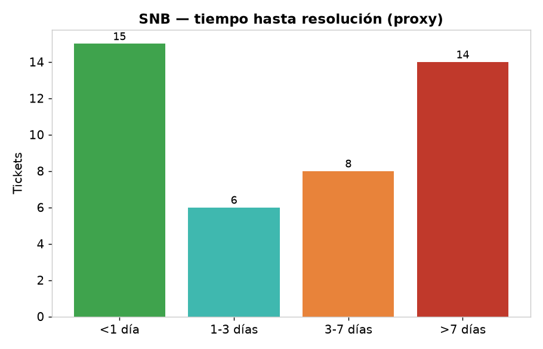
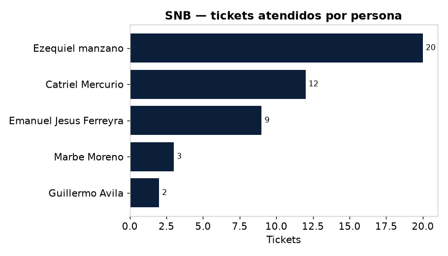

Período: 1–31 julio 2026 · Fuente: Jira (todos los tableros) · Generado: 2026-08-12
Complementa el resumen ejecutivo en Reporte Junta – Julio 2026.
| Métrica | Valor |
|---|---|
| 🗂️ Tareas trabajadas (creadas o movidas) | 395 |
| 🆕 Creadas en julio | 274 |
| ✅ Finalizadas (estado Listo/Finalizada) | 234 |
| 🎧 Tickets de soporte (SNB) | 46 |
| 👥 Personas involucradas | 9 |
| 📋 Tableros con actividad | 20 |

Lectura: el 45% del esfuerzo fue Desarrollo/Producto (178 tareas), el 43% Diseño/Marketing (171) y el 11% Soporte (46). El equipo finalizó 234 tareas pero ingresaron 274 nuevas: la demanda superó a la entrega, señal de fuerte actividad (arranque de GIGA, sistema de reputación de LIO, catálogo A+).


Cómo se distribuyó la carga entre el equipo durante julio:
| Persona | Tareas | Foco principal |
|---|---|---|
| Bárbara | 89 | Diseño/activaciones (ADATA, FB, LASET, marcas) + carga al ERP |
| Marbe Moreno | 72 | Front LIO + catálogo A+ (Gigabyte/Trust) + web NB |
| Ezequiel Manzano | 54 | Backend LIO/Pedidos/Postventa + ERP GIGA + soporte |
| Belu Ontivero | 47 | Diseño Blu/LASET/FB (triadas, redes, obra) |
| Franco Callipo | 32 | Backend LIO — reputación/calificaciones (API+CMS) |
| Emanuel Ferreyra | 29 | Backend Pedidos/Billetera LO |
| Catriel | 13 | Dirección + gestión de soporte |
| Guillermo, Alejandra | 8 | QA/research/eventos |
Observación de gestión: el equipo de diseño (Bárbara + Belu ≈ 136 tareas) sostuvo el mayor volumen operativo, mientras que el núcleo de desarrollo (Eze + Franco + Ema ≈ 115) concentró la complejidad técnica. Ezequiel fue el recurso más demandado por trabajar en 3 frentes en paralelo (Pedidos/Postventa, ERP GIGA y soporte SNB).
El soporte transversal absorbió 46 tickets en el mes, atendidos por el propio equipo de desarrollo. Se lo analiza acá por cantidad y por tiempo (volumen de trabajo e impacto temporal).




| Métrica | Valor |
|---|---|
| Tiempo de atención promedio | 5,6 días |
| Tiempo de atención mediano | 3,7 días |
| Atendidos en < 1 día | 15 (35%) |
| Atendidos en > 7 días | 14 (33%) |
| Esfuerzo estimado del equipo* | ~35–46 hs (≈ 4–6 jornadas) |
* Estimación a 45–60 min de atención efectiva por ticket (no hay worklogs cargados; el tiempo calendario incluye esperas).
Conclusión de gestión: el soporte no es gratis: recae sobre el mismo equipo de desarrollo (Eze/Ema) y compite con el roadmap. Con 46 tickets/mes y ~1/3 tardando más de una semana, conviene evaluar (a) un primer nivel de soporte dedicado, y (b) atacar las causas raíz de los Errores recurrentes (50% de los tickets) para liberar capacidad de desarrollo.
Referencias: 🆕 creada en julio · ✅ finalizada · 🔄 en curso · ⏳ por hacer.
87 tareas · 🆕 70 nuevas · ✅ 54 finalizadas · 🔄 24 en curso
LIO-679 · Backlog · Marbe Moreno — Opiniones de productoLIO-736 · Backlog · — — APP - API - OM - agregar cantidad de opiniones tipo: google maps o meliLIO-737 · Backlog · — — A+ Content 2LIO-742 · Backlog · — — PartPickerLIO-764 · Backlog · Franco Callipo — Instalar en local el juego Shopping GoblinLIO-765 · Backlog · Franco Callipo — Agregar multiplicador de puntos configurable por .envLIO-766 · Backlog · Franco Callipo — Al finalizar el juego, permitir enviar un correo al mail ingresadoLIO-767 · Backlog · Franco Callipo — Coordinar con la feature de air-drop de Ema para canjear los puntos del juego (sin acumular)LIO-666 · En curso · Franco Callipo — APP - Feat - Un vendedor debe poder pedir la revision para poder quitar una calificacionLIO-709 · En curso · Marbe Moreno — Tiendas oficialesLIO-754 · En curso · Emanuel Jesus Ferreyra — APP Mobile - Review - Control de versión -> Diferencia de versionesLIO-645 · Finalizada · Marbe Moreno — A+ ContentLIO-678 · Finalizada · Franco Callipo — API - CMS - Feat - Calificaciones del vendedorLIO-680 · Finalizada · Marbe Moreno — APP - Crear pantalla de calificación de producto (Similar a la calificación del vendedor)LIO-681 · Finalizada · Franco Callipo — API - feat - Crear endpoint de tipo PATCH para opinión del productoLIO-682 · Finalizada · Franco Callipo — API - Refactor - Ajustar las calificaciones del producto para mostrarla en la fichaLIO-683 · Finalizada · Marbe Moreno — APP - Refactor - Modificar la pantalla de calificacion de vendedorLIO-685 · Finalizada · Marbe Moreno — APP - Feat - PenalesLIO-686 · Finalizada · Ezequiel manzano — API - Feat - PenalesLIO-687 · Finalizada · Franco Callipo — API - Refactor - Recursos para calificar un vendedor segun una compraLIO-689 · Finalizada · Franco Callipo — API - LO - Refactor - Ver calificaciones con las observaciones del admin del CMSLIO-690 · Finalizada · Marbe Moreno — APP - Feat - Agregar opcion de replicar y responder una calificacion dentro de la pantalla de Reputación del vendedorLIO-691 · Finalizada · Franco Callipo — API - Refactor - Crear GET para traer el producto en la compraLIO-702 · Finalizada · Marbe Moreno — APP - Agregar filtro al pricesuggestion LIO-706 · Finalizada · Marbe Moreno — APP - Envios - Feat - Cotización - Priorizar estadísticas reales en plazo de entrega y sugeridoLIO-707 · Finalizada · Franco Callipo — API -Refactor - Ajustes para cuando se ve la reputacion de un vendedorLIO-710 · Finalizada · Franco Callipo — API - Review - Crear endpoint de tipo PATCH para opinión del producto -> Error sql al duplicar reseñaLIO-711 · Finalizada · Franco Callipo — API - Review - Crear GET para traer el producto en la compra -> Homologar estructura de respuestaLIO-712 · Finalizada · Marbe Moreno — APP - LO - Feat - Ver calificaciones con las observaciones del admin del CMSLIO-714 · Finalizada · Franco Callipo — API - Refactor - Agregar key de calificación en la compraLIO-715 · Finalizada · Franco Callipo — API - Review Error al opinarLIO-716 · Finalizada · Franco Callipo — API - Fix - Traer calificación una vez opinadoLIO-717 · Finalizada · Franco Callipo — API - Feature - Traer opinion hecha del cliente en el producto del lado de LOLIO-722 · Finalizada · Franco Callipo — API - Review - Traer calificación una vez opinado -> Calificación heredada entre comprasLIO-726 · Finalizada · Marbe Moreno — APP - Feat - Maquetar pantalla de aterrizaje y redireccion - Mostrar los datos en la walletLIO-729 · Finalizada · Ezequiel manzano — API - Refactor: Al guardar un puntaje, conservar siempre el puntaje más alto asociado a un mismo correo electrónico (un correo solo figura en el ranking una vez)LIO-731 · Finalizada · Marbe Moreno — APP - Refactor - Marcador suele verse siempre desplazado fuera de pantalla. Se puede mover a otro lado o quitar directamente ya que es facil llevar el recuento o se puede poner mas sutil con textoLIO-732 · Finalizada · Marbe Moreno — APP - Refactor - Intentar sacar del fondo contenido con cpyright sin cambiar proporciones para que el juego no se desajusteLIO-733 · Finalizada · Franco Callipo — API - Review - Traer calificación una vez opinado -> Calificación realizada no visibleLIO-734 · Finalizada · Marbe Moreno — APP - Review - Pantalla de calificacion del vendedor -> Petición ejecutada automáticamenteLIO-735 · Finalizada · Franco Callipo — API - Review - Calificar vendedor -> Campo obligatorio typeLIO-738 · Finalizada · Marbe Moreno — APP - Elabrorar content A+ de Trust Carus GXT492WLIO-739 · Finalizada · Marbe Moreno — APP - Elaborar contetn A+ de Auricular Trust Carus Multiplataforma White Gxt492wLIO-740 · Finalizada · Marbe Moreno — APP - Elaborar content A+ de Trust Forta Ps5 Gxt498LIO-741 · Finalizada · Marbe Moreno — APP - Elaborar content A+ de Trust Gxt255LIO-743 · Finalizada · Ezequiel manzano — API - Refactor - Agregar login al partpicker de inventarioLIO-744 · Finalizada · Marbe Moreno — APP - Elaborar contetn A_ de B840M A ELITE WIFI6E 1.0LIO-745 · Finalizada · Marbe Moreno — APP - Elaborar contet A+ B550 AORUS ELITE V2LIO-746 · Finalizada · Marbe Moreno — APP - Elaborar content A+ AORUS WATERFORCE X II 240LIO-747 · Finalizada · Marbe Moreno — APP - Elaborar content A+ B550I AORUS PRO AXLIO-748 · Finalizada · Emanuel Jesus Ferreyra — Revisar Google Play Console: actualizar target API de la app "Libre Opción Vendedores"LIO-749 · Finalizada · Marbe Moreno — Elaborar content A+ de Gigabyte Notebook i7-13620H 16GB DDR5 RTX 5050 512GB 16" FHD Win 11HLIO-750 · Finalizada · Marbe Moreno — Elaborar content A+ de Monitor Gamer Gigabyte 27" GS27FA SALIO-751 · Finalizada · Marbe Moreno — Elaborar content A+ de Monitor Gamer Gigabyte 24.5" GS25F2 200HzLIO-752 · Finalizada · Marbe Moreno — Elaborar content A+ de Fuente Gamer Gigabyte 550W Ice 80 Plus Silver ATX 3.0 WhiteLIO-753 · Finalizada · Marbe Moreno — Elaborar content A+ de Motherboard Gigabyte AM4 A520M K V2LIO-755 · Finalizada · Marbe Moreno — Elaborar content A+ de Fuente Gamer Gigabyte 750W 80 V2 Gold ModularLIO-756 · Finalizada · Marbe Moreno — Elaborar content A+ de Fuente Gamer Gigabyte 850W 80 Gold Modular PG5 V2LIO-757 · Finalizada · Marbe Moreno — Elaborar content A+ de Fuente Gamer Gigabyte 750W 80 BronzeLIO-758 · Finalizada · Marbe Moreno — Elaborar content A+ de Placa de Video Gigabyte RTX 5050 WF OC 8GBLIO-759 · Finalizada · Marbe Moreno — Elaborar content A+ de Motherboard Gigabyte AMD AM5 X870E A Elite X IceLIO-760 · Finalizada · Marbe Moreno — Elaborar content A+ de Gabinete Gamer Gigabyte C103 Glass PSU Bundle 650W 80 GoldLIO-761 · Finalizada · Marbe Moreno — Elaborar content A+ de Motherboard Gigabyte AM5 B840M Aorus Elite WiFi6ELIO-762 · Finalizada · Franco Callipo — Item aparece con marca "genérica" en la ficha y en el listado (Motherboard Gigabyte X870E A Elite X Ice)LIO-763 · Finalizada · Marbe Moreno — APP - Review - Mejorar como se ve una linea extraña en la home modo desktop-> ver img adjuntaLIO-708 · Ready for QA · Franco Callipo — API - CMS - Feat - Sección para cargar info de las tiendas oficiales (punto 1)LIO-713 · Ready for QA · Franco Callipo — API - CMS - Review - Revisar si se notifica al vendedor cuando se "elimina" una calificación y que esta no afecte su rankingLIO-718 · Ready for QA · Marbe Moreno — APP - Research maquetacion para busqueda de productosLIO-719 · Ready for QA · Marbe Moreno — APP - Maquetacion de las busquedasLIO-720 · Ready for QA · Franco Callipo — API - LO - Feat - Traer la información cargada en el CMS de las tiendas oficiales (punto 2)LIO-721 · Ready for QA · Marbe Moreno — APP - Feat - Crear landing para AMDLIO-723 · Ready for QA · Emanuel Jesus Ferreyra — API - Feat - Cancelación de retiro pendiente en la WalletLIO-724 · Ready for QA · Emanuel Jesus Ferreyra — air drop -> Qr - En la WalletLIO-725 · Ready for QA · Emanuel Jesus Ferreyra — API - Modelado - RequerimientosLIO-727 · Ready for QA · Marbe Moreno — APP - CMS - Feat - Seccion para cargar info de las tiendas oficiales (punto 1)LIO-728 · Ready for QA · Emanuel Jesus Ferreyra — APP - Feat - Cancelar retiro pendiente + monto máximo en la walletLIO-730 · Ready for QA · Marbe Moreno — APP - Refactor - Implementar mensajes de error en funcion de la respeusta nueva del backendLIO-768 · Ready for QA · Franco Callipo — API - CMS - Actualización - Hacer la lógica para las secciones y los menues en la devolución del json de las tiendas oficialesLIO-769 · Ready for QA · Franco Callipo — APP - LO - Agregar en la tienda oficial la parte de secciones y de los menues que trae ahora el endpointLIO-770 · Ready for QA · Franco Callipo — API - CMS - Asignar tienda oficial a vendedorLIO-771 · Ready for QA · Franco Callipo — API - LO - Catálogo del usuario (vendedor)-> tienda oficial LIO-772 · Ready for QA · Franco Callipo — API - Feat - Agregar campo de tienda oficial a los productos en las busquedasLIO-773 · Ready for QA · Marbe Moreno — APP - Feat - Catálogo de productos -> Tienda oficialLIO-774 · Ready for QA · Franco Callipo — API - Feat - Agregar subtitle (descripcion extra del producto)LIO-775 · Ready for QA · Marbe Moreno — APP - CMS - Asignar tienda oficial a un vendedorLIO-776 · Ready for QA · Franco Callipo — API - Feat - Modificar nombre de usuario vendedor por tienda oficial en LO LIO-1 · Selected for Development · — — Experiencia del Usuario (UX)20 tareas · 🆕 10 nuevas · ✅ 2 finalizadas · 🔄 16 en curso
LOMKT-267 · Activaciones OK · barbara — 1.Jul: 04/07 Sabias que si no cambias la pasta térmica o grasa siliconada de tu procesador cada 6 meses tu pc deja de rendir al máximo nivel?LOMKT-268 · Activaciones OK · barbara — 3.Jul: 09/09 Pasta térmica + grasa siliconadaLOMKT-269 · Activaciones OK · — — 2.Jul: 06/07Coolers+ Water coolers blancos vs negrosLOMKT-273 · Activaciones OK · barbara — 8.Jul: 23/07 Nunca toqué un destornillador y arme mi primera pc gamerLOMKT-274 · Activaciones OK · barbara — 5.Jul: 13/07 Tu primera PC Gamer, en cuotas_Armar copyLOMKT-275 · Activaciones OK · barbara — 6.Jul: 15/07Dicionario Gamer Libre opciónLOMKT-276 · Activaciones OK · barbara — 4.Jul: 11/07 144hz , 240hz, 280 hz Quien gana?_CopyLOMKT-280 · Activaciones OK · barbara — Jul: 02/07 Logos AMD, AORUS y TRUST para RemerasLOMKT-285 · Activaciones OK · Belu Ontivero — Jul: FolletoLOMKT-290 · Activaciones OK · barbara — Jul: Flyer eventoLOMKT-292 · Activaciones OK · barbara — Jul: Portada de videos_ProgramarLOMKT-294 · En curso · Belu Ontivero — Ago: Día del GamerLOMKT-289 · Finalizada · — — LO_PROMO NVIDIALOMKT-297 · Finalizada · barbara — 1.ACTIVACIONES EN EL ERPLOMKT-19 · PENDIENTE ERP · Marbe Moreno — Site LOLOMKT-279 · PENDIENTE ERP · barbara — 7.jul: agosto Proyector BenqLOMKT-286 · PENDIENTE ERP · barbara — Jul: Ago SmartwatchLOMKT-271 · REVISIÓN A · Ezequiel manzano — Jun: Logo de Gigabyte RotoLOMKT-272 · Tareas por hacer · — — 1.Jul: Banners Cambiar COLORES DEGRADE MAS PREGNANTELOMKT-296 · Tareas por hacer · Alejandra Guidobono — LO_ IMAGEN PANTALLA24 tareas · 🆕 23 nuevas · ✅ 9 finalizadas · 🔄 11 en curso
PED-1413 · En curso · Emanuel Jesus Ferreyra — API - Review - Market Place - Medio de pago -> Discrepancia en el medio de pagoPED-1390 · Finalizada · Marbe Moreno — APP WEB - Agregar IPA a clientes y descargar reporte de INTEL PED-1393 · Finalizada · Emanuel Jesus Ferreyra — API - Feat - Replicar como en Cobro, movimientos y saldo de Billetera LOPED-1394 · Finalizada · Emanuel Jesus Ferreyra — APP - Feat - Replicar como en Cobros, movimientos y saldo de Billetera LOPED-1397 · Finalizada · Marbe Moreno — Volanta: asegurar que muestre el logo de cada empresa (en este caso, LASET)PED-1398 · Finalizada · Marbe Moreno — Volanta: los nombres de los productos deben ir todo en MAYÚSCULAPED-1399 · Finalizada · Marbe Moreno — Al abrir un cliente de LASET, los datos no se cargan/preseleccionan correctamentePED-1400 · Finalizada · Ezequiel manzano — API - Review - Revisar por que hay datos que no vienen en Produccion en clientes ya cargados de LasetPED-1401 · Finalizada · Emanuel Jesus Ferreyra — Error al entrar al detalle de un pedido pagado con wallet (X000200659933 / 0002-10473402)PED-1404 · Finalizada · Marbe Moreno — WEBAPP - Ranking breakdownPED-1391 · Ready for QA · Emanuel Jesus Ferreyra — API - Feat - Saldo disponible para reembolso a billeteraPED-1392 · Ready for QA · Emanuel Jesus Ferreyra — APP - Feat - Saldo disponible y acreditación a billeteraPED-1396 · Ready for QA · Ezequiel manzano — API - FEAT - Reporte de inventario y SellOutPED-1402 · Ready for QA · Emanuel Jesus Ferreyra — Descancelar pedidos: opción con botón derecho sobre pedidos cancelados (front + back)PED-1405 · Ready for QA · Emanuel Jesus Ferreyra — API fix autorizar pago mixto wallet transferenciaPED-1406 · Ready for QA · Emanuel Jesus Ferreyra — APP - feat - mostrar monto wallet comprobante pagoPED-1407 · Ready for QA · Ezequiel manzano — Verificar y mejorar el dashboard de reportes de pedidosPED-1408 · Ready for QA · Ezequiel manzano — Revisar filtros de empresa, marca y categoría en los reportes (individuales y en conjunto)PED-1411 · Ready for QA · Emanuel Jesus Ferreyra — Edición de cliente: filtrar categorías de "Ajustar utilidad con item" por empresaPED-1412 · Ready for QA · Emanuel Jesus Ferreyra — Ajustar utilidad con item: agregar ítems en masa por marca, familia o match de stringPED-1395 · Tareas por hacer · — — Reporte especial IntelPED-1403 · Tareas por hacer · Marbe Moreno — APP - Review - Mejorar el zindex del modal de tracking-seguimientoPED-1409 · Tareas por hacer · Marbe Moreno — Dashboard: no recargar al cambiar filtro, mostrar botón "Recargar dashboard"PED-1410 · Tareas por hacer · Marbe Moreno — Filtro de empresa en dashboard: aplicar unlockCompanyCode + companyCode preseteado17 tareas · 🆕 13 nuevas · ✅ 4 finalizadas · 🔄 10 en curso
NBE-273 · Activaciones OK · Belu Ontivero — 1.Jun: Bienvenido al Equipo_Presentaciones NBE-277 · Activaciones OK · — — JUN: Actualización de fotos de perfil social mediaNBE-278 · Activaciones OK · barbara — .5.Jun: Nblelectic ERPNBE-280 · Activaciones OK · barbara — 1.Jul: Triada 1_ProgramarNBE-283 · Activaciones OK · barbara — 2.Jul: Triada 2_ProgramarNBE-286 · Activaciones OK · — — Jul: VcardNBE-287 · En curso · barbara — Jul: ABB Triada 3NBE-288 · En curso · — — Triada 4NBE-274 · Listo · barbara — 1. Jun: Armar logo de nbelectric en ai y jpg para vinilo de corte_Cargar al erpNBE-284 · Listo · Marbe Moreno — APP - Cambiar logo por el actualNBE-285 · Listo · Marbe Moreno — NBE.COM.AR | Ajustes WebNBE-291 · Listo · barbara — ACTIVACIONES EN EL ERPNBE-289 · PENDIENTE ERP · barbara — Evento ABB NBENBE-279 · POR HACER · — — Jul: Banners NbelectricNBE-281 · POR HACER · — — Jul: Actualizar los logos de nbe en la webNBE-282 · POR HACER · — — Info de Linea origen ABBNBE-290 · Revisión · Marbe Moreno — Nueva Firma Nbelectric con Vcard13 tareas · 🆕 13 nuevas · ✅ 8 finalizadas · 🔄 5 en curso
INV-353 · Finalizada · Marbe Moreno — Stock: ahorrar espacio vertical (subir buscador) + resolver mensaje del delta al filtrar por fechaINV-354 · Finalizada · Ezequiel manzano — Backend: filtro Nacional / Importado / Todo (cuidando performance)INV-355 · Finalizada · Marbe Moreno — Frontend: filtro Nacional / Importado / Todo (sin ocupar altura)INV-356 · Finalizada · Ezequiel manzano — Backend: filtro por Orden de compra (nnumped) e Ingreso (nnumalb) en StockINV-357 · Finalizada · Marbe Moreno — Frontend: filtro por Orden de compra / Ingreso en Stock (sin ocupar altura)INV-358 · Finalizada · Marbe Moreno — Stock: dejar un solo conmutador de "Ctrl de precios" (el de afuera) y anular el de ColumnasINV-362 · Finalizada · Marbe Moreno — Precios y Stock: al tildar el checkbox, resaltar toda la línea en verde (ayuda visual)INV-363 · Finalizada · Marbe Moreno — La fecha de los modales debe reflejar (asincrónicamente) la fecha de arribaINV-352 · Ready for QA · Ezequiel manzano — Jubilación Control de precios viejoINV-359 · Ready for QA · Ezequiel manzano — Ítems nuevos deben nacer ocultos en NB, NBE y LO (campos de ocultar de la tabla artículos)INV-360 · Ready for QA · Ezequiel manzano — Compras (producción): el token dura poco, revisar (jdebllo)INV-361 · Ready for QA · Ezequiel manzano — Notificar por correo el alta de SKU nuevo a una empresa (cron 30 min, permiso PM)INV-364 · Ready for QA · Ezequiel manzano — Cambio masivo de precio: agregar columna PCAM (ajuste de utilidad por columna)9 tareas · 🆕 7 nuevas · ✅ 6 finalizadas · 🔄 1 en curso
NBWEB-1030 · Finalizada · Marbe Moreno — APP WEB - Ver detalle postventaNBWEB-1031 · Finalizada · Ezequiel manzano — API - Ver detalle pase en pventaNBWEB-1033 · Finalizada · Marbe Moreno — APP - Mejorar banner de aceleradores que hoy se encuentra sin funcionalidadNBWEB-1036 · Finalizada · Guillermo Avila — Research - Evaluar opciones para generación automatizada de casos de prueba de negocioNBWEB-1037 · Finalizada · Marbe Moreno — APP - Refactor - agregar la marca "Cooler Master" y cambiar de banner principalNBWEB-1039 · Finalizada · Guillermo Avila — Actualizar documentación de developers.nb.com.ar (instrucciones de sandbox)NBWEB-1038 · Ready for QA · Ezequiel manzano — NBElectric (EFinder): duplicar productos con "P" y revisar SKUs de Netcomponent que no aparecenNBWEB-1034 · Tareas por hacer · — — AutomatizaciónNBWEB-1035 · Tareas por hacer · — — Generación de casos de prueba de negocio5 tareas · 🆕 0 nuevas · ✅ 5 finalizadas · 🔄 0 en curso
POS-339 · Finalizada · Ezequiel manzano — API - Disparar emailPOS-340 · Finalizada · Ezequiel manzano — API - Mejorar wording mail ingresoPOS-341 · Finalizada · Ezequiel manzano — API - Refactor Rechazar pre ingresoPOS-342 · Finalizada · Ezequiel manzano — API - Refactor remitos en pventa.POS-343 · Finalizada · Marbe Moreno — APP WEB - Agregar razon cuando se rechazo5 tareas · 🆕 4 nuevas · ✅ 2 finalizadas · 🔄 2 en curso
COM-320 · Finalizada · Marbe Moreno — APP - Refactor - Color de moneda cruzado en ordenes de compraCOM-324 · Finalizada · Ezequiel manzano — API - Refacto - Incorporar key para el partpicker en todos los recursos donde se utilizaCOM-321 · Ready for QA · Ezequiel manzano — APP / API - Refactor - Se debe poder cambiar la divisa de la orden de compra, independiente de lo que indica el proveedorCOM-322 · Ready for QA · Marbe Moreno — APP - Refactor - Se debe poder cambiar la divisa de la orden de compra, independiente de lo que indica el proveedorCOM-323 · Tareas por hacer · — — Partpicker3 tareas · 🆕 3 nuevas · ✅ 0 finalizadas · 🔄 3 en curso
COB-649 · Ready for QA · Emanuel Jesus Ferreyra — API - Feat - Bloqueo temporal de PendingCashOut durante su procesamientoCOB-650 · Ready for QA · Emanuel Jesus Ferreyra — APP - Feat - Bloqueo temporal de PendingCashOut durante su procesamientoCOB-651 · Ready for QA · Emanuel Jesus Ferreyra — API/APP - Feat - exponer monto pagado con billetera al cobrar pedido3 tareas · 🆕 1 nuevas · ✅ 3 finalizadas · 🔄 0 en curso
DNYL-1459 · COMUNICADO · — — geniusDNYL-1472 · COMUNICADO · — — NB_ ACELERADOR RAZER DESTACADODNYL-1481 · COMUNICADO · — — NB_ JUEVES Y VIERNES CERRADOS1 tareas · 🆕 1 nuevas · ✅ 0 finalizadas · 🔄 1 en curso
EXP-560 · Ready for QA · Ezequiel manzano — Restringir créditos e ingreso de mercadería (serializar) solo a Diego Bordón y Daniel de expedición12 tareas · 🆕 12 nuevas · ✅ 9 finalizadas · 🔄 0 en curso
GIGA-10 · Listo · Ezequiel manzano — Estados de proyectos configurables (nombre + color) y nuevo estado "Pendiente de pago"GIGA-11 · Listo · Ezequiel manzano — Fondos: selector de cliente con búsqueda al agregar una nueva acciónGIGA-12 · Listo · Ezequiel manzano — Nueva acción de marketing: quitar el selector de campañaGIGA-2 · Listo · Ezequiel manzano — API - Feat - Agregar login de partpicker al ERP en los recursos de partpickerGIGA-3 · Listo · Ezequiel manzano — Importar listas de contactos al ERP + nueva sección Contactos (con alta de clientes y país)GIGA-5 · Listo · Ezequiel manzano — Etiquetas de cargo: mostrar sugerencias mientras se escribe y permitir seleccionarlas con clicGIGA-6 · Listo · Ezequiel manzano — Contactos: selector de cliente con búsqueda por match mientras se escribeGIGA-8 · Listo · Ezequiel manzano — Nueva sección "Mapa de Ploteos": mapa del país con marcas de ploteos, filtros y alta de ploteosGIGA-9 · Listo · Ezequiel manzano — Calendario: permitir elegir la hora y ordenar los eventos por hora de ocurrencia (en el día y en la lista)GIGA-4 · Pendiente ERP · — — Ju: Reu Eze-Leo-Catri-Ale + Vale-EmiGIGA-1 · Por hacer · — — ERPGIGA-7 · Por hacer · Alejandra Guidobono — 🧬LOGOS BRANDBOOK58 tareas · 🆕 21 nuevas · ✅ 54 finalizadas · 🔄 4 en curso
FB-100 · ACTIVACIONES · Belu Ontivero — FB: Tarjeta corporativa Felices fiestas para enviar por WhatsappFB-101 · ACTIVACIONES · — — 5. Enviar por whatsapp Avance de obra DiciembreFB-102 · ACTIVACIONES · barbara — Enviar tarjeta de felices fiestas a la base que se paso por whatsappFB-103 · ACTIVACIONES · Belu Ontivero — FB: Triada 8 Felices FiestasFB-106 · ACTIVACIONES · barbara — FB: TRIADA 9FB-107 · ACTIVACIONES · — — FB Enero: Triada 9FB-111 · ACTIVACIONES · — — Enero: Triada 10FB-115 · ACTIVACIONES · — — Feb: Triada 11FB-121 · ACTIVACIONES · Belu Ontivero — Mar: Triada 12FB-123 · ACTIVACIONES · Belu Ontivero — Ir con Fotógrafo Carlos a la Obra Viernes 11 am para sacar fotos de avance de obraFB-124 · ACTIVACIONES · Belu Ontivero — 2.Abr: Triada Avance de Obra AbrilFB-133 · ACTIVACIONES · Belu Ontivero — May: 2. Reel Avance de ObraFB-134 · ACTIVACIONES · Belu Ontivero — May: 1. Triada Acerca de nosotrosFB-137 · ACTIVACIONES · — — Enviar Por Whatsapp Avanace de obra a los propietariosFB-138 · ACTIVACIONES · barbara — May: pasar link con avance de obraFB-139 · ACTIVACIONES · barbara — CARGAR ERP_Agregar FechasFB-140 · ACTIVACIONES · barbara — 1. May: Unidades + convertite en propietario_PROGRAMAR para mayo FB-141 · ACTIVACIONES · Belu Ontivero — 2. Cambios en la presentación Interwin.FB-142 · ACTIVACIONES · Belu Ontivero — 2.Jun: PPF + COVERSFB-148 · ACTIVACIONES · Belu Ontivero — 3.Jun: Triada Avance ObraFB-150 · ACTIVACIONES · barbara — 2.Jun: Triada inverti_Programar ya están listos los copys_ a partir del 30 /6FB-157 · ACTIVACIONES · barbara — 6.Jun: ERPFB-17 · ACTIVACIONES · — — Site- Etapa 0FB-27 · ACTIVACIONES · — — Feed Social MediaFB-28 · ACTIVACIONES · — — Fontaine Bleau: Sitio Web_Etapa 0FB-40 · ACTIVACIONES · — — Triada 2_Social Media_FB UgarteFB-56 · ACTIVACIONES · Belu Ontivero — Renders EcheverríaFB-57 · ACTIVACIONES · Belu Ontivero — ⚫ Fotos en baja_ Avance de obra FB-58 · ACTIVACIONES · Belu Ontivero — Ago: Ugarte Avance de obra AgostoFB-59 · ACTIVACIONES · Belu Ontivero — Fontaine Bleau: Newsletter FB-61 · ACTIVACIONES · — — Fontaine Bleau: Triada 4_FB Ugarte RendersFB-68 · ACTIVACIONES · barbara — Renombrar Carpeta de Logos Fontaine BleauFB-76 · ACTIVACIONES · — — 1.Fontaine Bleau: Agendar contactos whatsappFB-84 · ACTIVACIONES · — — FB: Noviembre Triada 5FB-90 · ACTIVACIONES · Marbe Moreno — APP - Refactor - Conectar formulario de suscripción al news utilizando el recurso y token de clienteFB-91 · ACTIVACIONES · Marbe Moreno — APP - Refactor - Conectar formulario de contacto utilizando el recurso y token de clienteFB-92 · ACTIVACIONES · — — FB: Noviembre Triada 6FB-96 · ACTIVACIONES · — — FB: Triada 7 Avance de obra Diciembre 2025FB-171 · En CURSO · Belu Ontivero — Ago: Triada 5 Post 1 Los alrrededoresFB-172 · En CURSO · Belu Ontivero — Ago: Triada 5 Post 2 Avance de obraFB-173 · En CURSO · — — Ago: Triada 5 post 3 Avance de obraFB-158 · Listo · Belu Ontivero — Jul: Visita a la obra_coordinar para la semana que vieneFB-159 · Listo · barbara — 1.Jul: Triada 3 Post 1 Un día en Núñez_PROGRAMARFB-160 · Listo · barbara — Jul: Triada 3 Post 2 ¿Qué valorás más de vivir en Núñez?_ProgramarFB-161 · Listo · barbara — 0.Jul: Triada 3 Post 3 Núñez, una ubicación que conecta_ProgramarFB-162 · Listo · Belu Ontivero — Jul: Cierre de Feed Nueva propuestaFB-163 · Listo · Belu Ontivero — Jul: Subir Fotos Avance de obraFB-164 · Listo · Belu Ontivero — Jul: Actualizar manual de marca con color nuevo + FBFB-165 · Listo · Belu Ontivero — Jul: Actualizar presentaciones con nuevo colorFB-166 · Listo · Belu Ontivero — Jul: Subir Iso FB.FB-167 · Listo · Belu Ontivero — Jul: Subir PPF-Avatar- Probar FB.FB-168 · Listo · barbara — Jul: Triada 4 Post 1 Avace de obra_Programar No usar la imagen 1eFB-169 · Listo · barbara — Jul: Triada 4 Post 2 Avace de obra_No postear el LinkedinFB-170 · Listo · barbara — Jul: Triada 4 Post 3 Avace de obra_ publicar HoyFB-174 · Listo · Catriel Mercurio — Ju: Newsletter Avance de ObraFB-175 · Listo · barbara — ACTIVACIONES EN EL ERPFB-176 · Listo · barbara — Jul: ENVIAR Avance de Obra Julio - story wspFB-177 · Revisión · Marbe Moreno — Jul: Avance de Obra Julio Site42 tareas · 🆕 21 nuevas · ✅ 9 finalizadas · 🔄 33 en curso
ADATA-295 · Activaciones OK · barbara — 8.Jul: 1/4 Social Media Psu Kyber 850_ProgramarADATA-296 · Activaciones OK · barbara — 9.Jul: 2/4 Social Media Power Bank R050_ProgramarADATA-297 · Activaciones OK · barbara — 11.Jul: 3/4 Social Media Starker Air BTF _ProgramarADATA-298 · Activaciones OK · barbara — Jul: 4/4 Social Mediaisco SATA SU650 2.5_ProgramarADATA-299 · Activaciones OK · barbara — 1. Jul: Enviar Pieza para enviar por Whatsapp a Team AdataADATA-300 · Activaciones OK · — — Jul: Diseño de flyers, banners web y slides.ADATA-351 · Activaciones OK · — — Jul: Reporte mensual de los distribuidores 6 DistribuidoresADATA-432 · Activaciones OK · barbara — 2.Jun:POES JUN ADATA-439 · Activaciones OK · barbara — 1. Jun: Newletters Junio (hacer todos)_ÚLTIMO DÍA COMPRÁ Y GANÁADATA-441 · Activaciones OK · barbara — 5 Computex Linkedin COPY_PROGRAMARADATA-449 · Activaciones OK · barbara — 1.Jun: Armar Reel del viaje de Adata 26ADATA-453 · Activaciones OK · barbara — 3.Jun:ERP_Adata ADATA-455 · Activaciones OK · barbara — Jul: Emoji day Copy para revisión _Programar ver comentario va ese copyADATA-456 · Activaciones OK · barbara — Jul: Friends Forever_Programado con el copy del comentarioADATA-459 · Activaciones OK · barbara — 12.5/4 Jul: Social Media Spectrix s65G_ProgramarADATA-460 · Activaciones OK · barbara — 3. 6/4 Jul: Meme_ProgramarADATA-461 · Activaciones OK · barbara — 1. Adata Rewards_Ultimo dia_Pasar a primera hora 9 am a los distris y luego al grupo de Adata Rewards para que los chicos puedan aprovechar la comunicación ADATA-462 · Activaciones OK · barbara — 3.Jul: Vamos Argentina vs cabo verde_Postear para cuando finalice el partidoADATA-463 · Activaciones OK · Belu Ontivero — Felicitaciones a los Ganadores Adaata RewardsADATA-464 · Activaciones OK · barbara — 4.Jul: Pov cobraste el aguinaldo (meme)_PROGRAMARADATA-469 · Activaciones OK · — — Jul: Vamos Argentina vs Egypt_ postear post partidoADATA-470 · Activaciones OK · barbara — 5.Jul: Poes_Enviar Whatsapp avisando para q suban las fotos y ya subir lo de la agencia de prensa ADATA-472 · Activaciones OK · — — Jul: Vamos Argentina vs suiza_Postear para cuando finalice el partidoADATA-473 · Activaciones OK · barbara — Jul: Vamos Argentina vs Inglaterra_Postear para cuando finalice el partidoADATA-475 · Activaciones OK · barbara — Jul: Pasar los banners Revisar elit si tiene el editableADATA-476 · Activaciones OK · barbara — Jul: Pasar a los distris los ganadores de Asata RewardsADATA-477 · Activaciones OK · — — ARG VS ESP story subir post partidoADATA-482 · Activaciones OK · Belu Ontivero — Jul: Diseño Cartel Adata Fullhard TecnofieldsADATA-484 · Activaciones OK · barbara — Jul: Cargar ERP todos los post de redes socialesADATA-458 · Listo · barbara — Jul: EventoADATA-465 · Listo · barbara — JuL: Diseño de banners_Pasar linkADATA-466 · Listo · barbara — 2.Jul: Ferchetos_PASAR VALORES A ADATAADATA-467 · Listo · — — Jul: Cotizacion de CamperasADATA-468 · Listo · barbara — 2.CARGAR COTIZACIONES ADATAADATA-480 · Listo · barbara — Ago 19: Dia de la fotografia mini SD_Cargar activaciones y hacer poesADATA-481 · Listo · barbara — Ago 29: Dia del gamer_Programar_Cargar activaciones y hacer poesADATA-483 · Listo · barbara — 0.Jul: Presupuesto_Cargar activaciones pantalla juego merchandisin y bolsas elit brand tour individuales los presupuestosADATA-485 · Listo · barbara — Propuesta Brand Tour elit_Cargar activaciones y hacer poesADATA-474 · PENDIENTE DE COMUNICAR · barbara — Jul: Argentina-InglaterraADATA-471 · PENDIENTE ERP · barbara — ENVIAR CORREOS A LOS DISTRIS CON LOS BANNERS ADATA-478 · Revisión · Ezequiel manzano — Actualizar el login del PartPicker de RewardsADATA-479 · Revisión · barbara — 6.Ago: Meme19 tareas · 🆕 11 nuevas · ✅ 9 finalizadas · 🔄 10 en curso
LAW-1 · Finalizada · — — Sitio Web Actual_Etapa 1LAW-106 · Finalizada · barbara — Jul: Triada 2 post 4 Macrovip bienvenida_CopyLAW-111 · Finalizada · barbara — Jul: Triada 2 Post 5_ZOTAC_ProgramarLAW-113 · Finalizada · barbara — Jul: Logo SVG Agregado en el site Macrovip Trust -GxTrustLAW-114 · Finalizada · barbara — Jul: Se adicionó flechas en la parte de Slider Marcas LAW-116 · Finalizada · barbara — ACTIVACIONES EN EL ERPLAW-67 · Finalizada · Belu Ontivero — May: New: social MediaLAW-72 · Finalizada · Belu Ontivero — 1.May: Triada 1LAW-73 · Finalizada · Belu Ontivero — 4.Jun: ComputexLAW-107 · REVISIÓN · barbara — Jul: Triada 4 Post 10_PATRIOT_CopyLAW-108 · REVISIÓN · barbara — Jul: Triada 4 Post 11_TOSHIBA_CopyLAW-109 · REVISIÓN · barbara — Jul: Triada 4 Post 12_ASUS_CopyLAW-110 · REVISIÓN · barbara — Jul: Triada 5 Post 14_GENIUSLAW-115 · REVISIÓN · Belu Ontivero — Jul: Imagenes de cierre propuesta nuevaLAW-112 · REVISIÓN LASET · Belu Ontivero — Jul: Hoja MembretadaLAW-87 · REVISIÓN LASET · Belu Ontivero — Jul: Triada 3 Post Aorus 9 (USAR SOLO AORUS)_OkLAW-89 · REVISIÓN LASET · Belu Ontivero — Jul: Triada 3 Post 8_THERMALTAKE_Pasar a validar a Laset_PendienteLAW-64 · Referencia · Belu Ontivero — 3.May:Presentación LasetLAW-74 · Referencia · Belu Ontivero — 2. TARJETA PERSONAL12 tareas · 🆕 12 nuevas · ✅ 2 finalizadas · 🔄 6 en curso
DLINK-1 · LISTO · Belu Ontivero — Jul: D-link_subir lo que esta hecho hasta el momentoDLINK-7 · LISTO · barbara — Ago: descargar y subir material de Dlink HOYDLINK-12 · Por hacer · Belu Ontivero — 5.Ago: Triada 2 Post 2DLINK-3 · Por hacer · Alejandra Guidobono — 🧬Dlink DataDLINK-6 · Por hacer · Belu Ontivero — 4.Ago: Triada 2 Post 1DLINK-8 · Por hacer · Belu Ontivero — 6.Ago: Triada 2 Post 3 Sabías que productos tienen 10 años de GarantíaDLINK-10 · REVISIÓN · barbara — 3.Ago: Triada 1 Post 3_COPYDLINK-11 · REVISIÓN · barbara — 1.Ago: Triada 1 Post 1_COPYDLINK-2 · REVISIÓN · Belu Ontivero — Jul: Dlink 10 años de Garantía_Opción 6DLINK-4 · REVISIÓN · Belu Ontivero — 7. Jul: PPF + nueva portada LinkdinDLINK-5 · REVISIÓN · Belu Ontivero — 1. Ago: MeliDLINK-9 · REVISIÓN · barbara — 2.Ago: Triada 1 Post 2_COPY11 tareas · 🆕 6 nuevas · ✅ 10 finalizadas · 🔄 0 en curso
BLUWEB-290 · LISTO · — — 6- POST - BLU.ITBLUWEB-293 · LISTO · Belu Ontivero — 6. Destacadas Blu 5 unidades BLUWEB-297 · LISTO · Belu Ontivero — Junt: VER TAREA BLUWEB-298BLUWEB-298 · LISTO · barbara — 3.Jul: BluTriada 1,2 y3_PROGRAMARBLUWEB-299 · LISTO · barbara — Retiro de CintasBLUWEB-300 · LISTO · barbara — FLOREROSBLUWEB-301 · LISTO · Belu Ontivero — JUL | BLU TRIADA 1BLUWEB-302 · LISTO · barbara — JUL | BLU TRIADA 2_ProgramarBLUWEB-303 · LISTO · barbara — 1. JUL | BLU TRIADA 3_Cambiar cierresBLUWEB-304 · LISTO · barbara — Jul: Cronograma de ActividadesBLUWEB-213 · PENDIENTE DE COMUNICAR · — — Cumples 20266 tareas · 🆕 6 nuevas · ✅ 3 finalizadas · 🔄 0 en curso
CBL-2 · Listo · Alejandra Guidobono — MIC: Jul Evento Microglobal Cisco-BrotekCBL-5 · Listo · — — BRO: Tarjeta Felices fiestasCBL-6 · Listo · — — BRO: Tarjeta evento PMCBL-1 · Por hacer · — — LOGOS BROTHERCBL-3 · Por hacer · — — LOGOS MICROGLOBAL-CISCO-BROTEKCBL-4 · Por hacer · — — LOGOS ACER2 tareas · 🆕 2 nuevas · ✅ 2 finalizadas · 🔄 0 en curso
PB-7 · Finalizada · barbara — Jul: Brother Kids dayPB-8 · Finalizada · barbara — Jul: Ceven Friends DaySNB-4025 · Finalizada · Nueva función · atendió Ezequiel manzano (reporta niczerus) — mejorar filtro - de Solo tiendaSNB-4028 · Finalizada · Nueva función · atendió Ezequiel manzano (reporta Pedidos Jira) — Reportes Intel - DUE 29/06/2026SNB-4031 · Resuelta · Support · atendió Ezequiel manzano (reporta Pedidos Jira) — ACTUALIZACION PUNTOS MUNDIAL RESELLERSNB-4034 · Finalizada · Error · atendió Emanuel Jesus Ferreyra (reporta niczerus) — envios por andreani marcan fecha de entrega demasiado proximas SNB-4035 · Finalizada · Nueva función · atendió Catriel Mercurio (reporta Pedidos Jira) — exportar despachosSNB-4038 · Finalizada · Error · atendió Catriel Mercurio (reporta Inventario Jira) — Ertror en control de preciosSNB-4039 · Resuelta · Support · atendió Emanuel Jesus Ferreyra (reporta Blubot) — [Expedición] Envíos - Tengo la compra LO - 807649 con envio a Jujuy 1197, Porteria , CP: 1229, BELSNB-4040 · Finalizada · Error · atendió Catriel Mercurio (reporta Pedidos Jira) — Ver clientes DigitoSNB-4042 · Finalizada · Error · atendió Catriel Mercurio (reporta Blubot) — [Compras] Sistemas - al querer dart de alta una orden de compra da un error de SQL creo no estar omSNB-4043 · Finalizada · Error · atendió Ezequiel manzano (reporta Pedidos Jira) — cuando puedas le cambias el agente de libre opcion a Julián Albarracin porfa?SNB-4044 · Finalizada · Error · atendió Ezequiel manzano (reporta Blubot) — Sistemas - Lucas-rivadeneira@hotmail.com este cliente se creo una cuenta pero no puede acceder a ellSNB-4045 · Cerrada · Support · atendió Ezequiel manzano (reporta Postventa) — Falla al ingresar un productoSNB-4046 · Finalizada · Error · atendió Emanuel Jesus Ferreyra (reporta niczerus) — Andreani nuevamente tiene fechas de entrega muy próximas SNB-4047 · Resuelta · Support · atendió Catriel Mercurio (reporta Expedicion Jira) — facturacionSNB-4048 · Finalizada · Error · atendió Catriel Mercurio (reporta Inventario Jira) — Error al dar de alta grasas pastermaxSNB-4049 · Resuelta · Support · atendió Catriel Mercurio (reporta logistica@nb.com.ar) — problema con un serial SNB-4050 · Finalizada · Error · atendió Emanuel Jesus Ferreyra (reporta niczerus) — localidad y cp faltaSNB-4051 · Finalizada · Error · atendió Ezequiel manzano (reporta Blubot) — Diferencia entre total del pedido y factura emitida para cliente de Tierra del FuegoSNB-4052 · Resuelta · Support · atendió Marbe Moreno (reporta Postventa) — Solicitud de remito de recepción de la orden 38626SNB-4053 · Finalizada · Error · atendió Ezequiel manzano (reporta Postventa) — quedo una orden abiertaSNB-4054 · Finalizada · Error · atendió Ezequiel manzano (reporta niczerus) — subir pdf de comprobantes tira errorSNB-4055 · Resuelta · Support · atendió Emanuel Jesus Ferreyra (reporta Pedidos Jira) — consulta por lapso de entrega de pedido Rio Cuarto CordobaSNB-4056 · Cerrada · Support · atendió Ezequiel manzano (reporta Catriel Mercurio) — Pequeño error en formato de fehca al listar ingresos en expedicion post importacion final de LASETSNB-4057 · Esperando por ayuda · Nueva función · atendió Catriel Mercurio (reporta niczerus) — Que desde la parte de atencion al cliente respondan mas rapido a las tiendasSNB-4058 · Finalizada · Nueva función · atendió Catriel Mercurio (reporta niczerus) — Tema envios bultos- roboSNB-4059 · Finalizada · Error · atendió Ezequiel manzano (reporta Pedidos Jira) — visualización SOPORTE INTELAID P/ AUTO TABLET 8.5 IT-TCMS en nb.com.arSNB-4060 · Finalizada · Error · atendió Ezequiel manzano (reporta Expedicion Jira) — no imprime la volantaSNB-4061 · Resuelta · Support · atendió Ezequiel manzano (reporta Pedidos Jira) — consulta puntos Marsro NB trabelSNB-4062 · Cerrada · Support · atendió Ezequiel manzano (reporta Pedidos Jira) — actualizacion puntos NB TRAVELSNB-4063 · Finalizada · Error · atendió Ezequiel manzano (reporta Catriel Mercurio) — Error al imprimir la volanta desde login de pedidos y expediciónSNB-4064 · Finalizada · Error · atendió Ezequiel manzano (reporta Catriel Mercurio) — Factura validada en ARCA figura como inexistente al verificar el CAESNB-4065 · Finalizada · Error · atendió Catriel Mercurio (reporta niczerus) — Error logueoSNB-4066 · Work in progress · Nueva función · atendió Marbe Moreno (reporta Marbe Moreno) — APP - Mejora - ribbon para saber cuando se esta en dev en el frontSNB-4067 · Resuelta · Support · atendió Guillermo Avila (reporta Catriel Mercurio) — [Ventas] Pagos/Cobros - no me deja cobrar una venta xxxSNB-4068 · Finalizada · Nueva función · atendió Catriel Mercurio (reporta Cobros Jira) — FUERA DE OFICINASNB-4069 · Finalizada · Error · atendió Emanuel Jesus Ferreyra (reporta niczerus) — no funcionaSNB-4070 · Resuelta · Support · atendió Ezequiel manzano (reporta Catriel Mercurio) — Usuario no puede acceder al mail para verificar cuentaSNB-4071 · Finalizada · Error · atendió Ezequiel manzano (reporta Pedidos Jira) — NC Dígito x NBSNB-4072 · Finalizada · Error · atendió Ezequiel manzano (reporta Expedicion Jira) — error en columna facturaSNB-4073 · Cerrada · Support · atendió Emanuel Jesus Ferreyra (reporta Catriel Mercurio) — No aparece opción de envío por camioneta para Lomas del MiradorSNB-4074 · Finalizada · Error · atendió Emanuel Jesus Ferreyra (reporta Cobros Jira) — hice mal ingfreso de dineroSNB-4075 · Resuelta · Support · atendió Emanuel Jesus Ferreyra (reporta Guillermo Avila) — Conector NB - Sincronización automática -> Ejecución no realizadaSNB-4076 · Finalizada · Nueva función · atendió Marbe Moreno (reporta Postventa) — Necesitamos que aparezca el serial de los cambios (producto nuevo) en el remito de entregaSNB-4077 · Finalizada · Nueva función · atendió Ezequiel manzano (reporta Postventa) — Remito de entregaSNB-4078 · Abierta · Error · atendió Catriel Mercurio (reporta niczerus) — Todos los ultimos ingresos de productos son de la tienda BsAsPCSNB-4079 · Finalizada · Error · atendió Guillermo Avila (reporta Expedicion Jira) — error